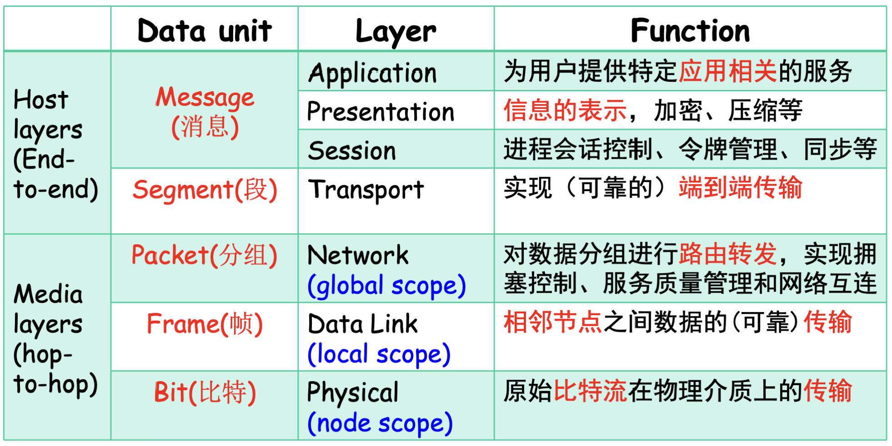

什么是计算机网络
a group of separate but interconnected(相连的) computers.
可能混淆的概念：
1. Distributed Systems 分布式系统：A software system built on top of a network。一组独立的计算机组成，表现出来就是一台计算机，底层是透明的(不可见的)；
2. Computer networks：一组自主工作的计算机通过一种技术实现互连，所有计算机对用户都是可见的；
计算机网络不是：
- Internet 因特网：通常指全球范围的互联网，即由无数网络和设备组成的庞大系统；
- WWW 万维网：A distributed system (or an application) running on top of Internet。一种基于计算机网络提供的应用/服务；
注意区分Internet(因特网) 和 internet(互联网)；
QOS(Quality of Service)网络服务质量
- Latency/Delay 延迟：绝对时间差
- Jitter 抖动：不同数据包到达的时间差（相对时间差）
- Bandwidth 带宽：网络在单位时间内传输的数据量，通常以bps（比特每秒）为单位
- Bit-Error-Rate(BER) 比特差错率：传输过程中出错的比特数与总比特数的比率
实时视频会议中，比较重要的QOS指标？
Latency and Bandwidth；
计算机网络的硬件组成
- Nodes：
- Computers/Hosts(主机)/End Systems(终端)；
- Switch(交换机)/Routers(路由)；
- Communication Links 链路：有线 or 无线；
Infrastructure network vs. Ad hoc network(自组织网络)：
1. Infrastructure network：基于固定基础设施（如路由器、交换机、接入点）构建的网络；
2. Ad hoc network：去中心化的网络，设备直接相互通信，无需依赖固定基础设施；
计算机网络的分类
By Position：
- Access Network；
- Data Center Network；
- Transmission Network；
By Transmission Tech
- Unicasting(单播)：点对点链路，中间设备一般是Router；比如WANS，如果用广播，通信量太大；
- Broadcasting(广播)：Multicasting(多播)；
By Scale
- PAN，个域网；蓝牙、RFID等短距射频通信；
- LAN，局域网；Ethernet、WiFi；
- MAN，城域网；cable TV广播电视；
- WAN，广域网；3G、4G、5G；
- The Internet，因特网；特指诞生于美国的全球范围的网络
注意与互联网internet区分，互联网的定义是网络的网络network of networks；
计算机网络体系结构
Tips：一些关键概念
1. Protocol协议：对等层之间约定；
2. Interface接口：相邻两层之间，下层为与其相邻的上一层提供服务/接口；
3. Peers对等实体；
4. Network Architecture网络体系结构：包括Layers和Protocals，不包括Interface，并且协议实现的细节也与体系结构无关；
5. Protocal Stack协议栈；
6. PDU协议数据单元：即对等层之间进行虚拟通信的数据包，由协议决定；
7. Encapsulation封装：上一层在往下一层传输时前面或后面加上特定的控制消息头，构成本层的数据包(PDU协议数据单元)；
服务分类
Connetcion-Oriented 面向连接
- 先建立连接；
- 再传送数据（Message报文 && Packet）；
- 最后释放资源；
特点是传输的顺序是固定的，较为可靠；
Connectionless
特点是动态分配资源（数据传输到了再分配），每条消息和包都需要携带完整的目标地址，数据易丢失；
服务原语Service Primitives
基本概念：
1. Service Provider(Layer \(n\))，Service User(Layer \(n + 1\))；
2. SAP：Service Access Point服务访问点，即接口Interface；
服务原语：
DNS解析的例子
浏览网页的例子
服务和协议的关系
- 该层协议的实现需要下层服务的服务，即下层服务的变化可能会影响上一层协议的实现；
- 该层协议的实现需要本层服务的支持；
- 该层服务不变时，本层协议实现变化不影响上层；
参考模型
OSI模型
- 通过中间的路由传输时实际只涉及物理层1、数据链路层2、网络层3；
- 只有两端的节点涉及传输层4、会话层5、表示层6、应用层7；

TCP/IP模型
标准定义是4层：Application、Transport、Internet网际层、Link；
Internet网际层：packet switching、connectionless；IP(Internet Protocol)；
Transport：TCP(Transmission Control Protocol)、UDP(User Datagram Protocol)；
> TCP：connection-oriented；
> UDP：connectionless；
Hybrid Model混合模型
5层，在TCP/IP的基础上将物理层划分了出来；
Application Layer；Transport Layer；Network Layer；Data Link
Layer；Physical Layer；